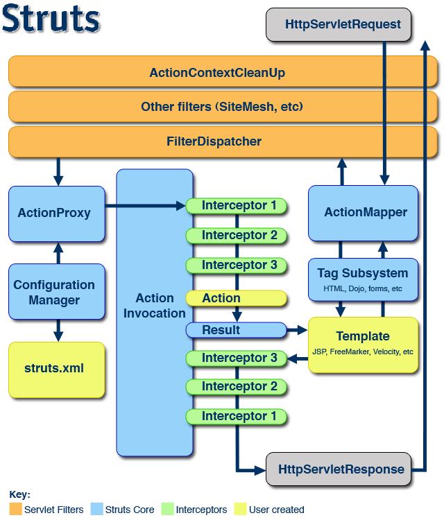

In the diagram, an initial request goes to the Servlet container (such as Jetty or Resin) which is passed through a standard filter chain. The chain includes the (optional) ActionContextCleanUp filter, which is useful when integrating technologies such as SiteMesh Plugin. Next, the required FilterDispatcher is called, which in turn consults the ActionMapper to determine if the request should invoke an action.
If the ActionMapper determines that an Action should be invoked, the FilterDispatcher delegates control to the ActionProxy. The ActionProxy consults the framework Configuration Files manager (initialized from the struts.xml file). Next, the ActionProxy creates an ActionInvocation, which is responsible for the command pattern implementation. This includes invoking any Interceptors (the before clause) in advance of invoking the Action itself.
Once the Action returns, the ActionInvocation is responsible for looking up the proper result associated with the Action result code mapped in struts.xml. The result is then executed, which often (but not always, as is the case for Action Chaining) involves a template written in JSP or FreeMarker to be rendered. While rendering, the templates can use the Struts Tags provided by the framework. Some of those components will work with the ActionMapper to render proper URLs for additional requests.
| All objects in this architecture (Actions, Results, Interceptors, and so forth) are created by an ObjectFactory. This ObjectFactory is pluggable. We can provide our own ObjectFactory for any reason that requires knowing when objects in the framework are created. A popular ObjectFactory implementation uses Spring as provided by the Spring Plugin. |
Interceptors are executed again (in reverse order, calling the after clause). Finally, the response returns through the filters configured in the web.xml. If the ActionContextCleanUp filter is present, the FilterDispatcher will not clean up the ThreadLocal ActionContext. If the ActionContextCleanUp filter is not present, the FilterDispatcher will cleanup all ThreadLocals.